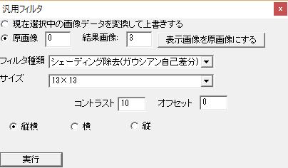
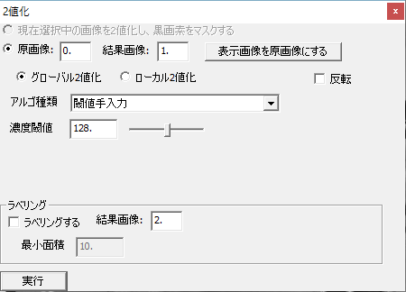
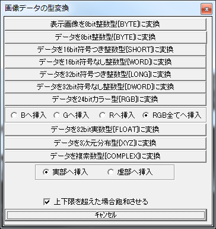
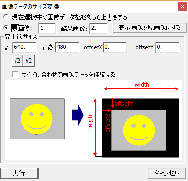
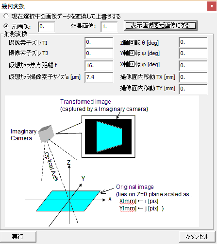
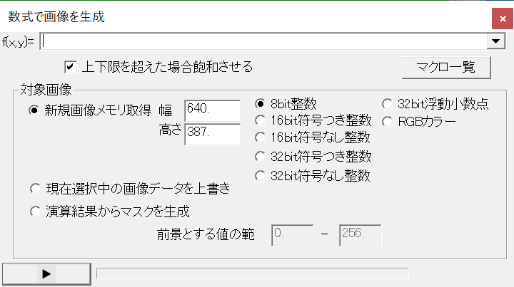

6. 画像処理機能
汎用フィルタ、2 値化とラベリング、型変換、サイズ変換、幾何変換、数式による画像生成、画像間演算の仕様を示す。UI は各ダイアログ、処理本体は CPimpomAPI（API/）にある。
共通規則
| 項目 | 規則 |
|---|---|
| 画像の指定 | src／dst に画像メモリ番号。-1（CURRENT_IMAGE）は選択中の画像（2 値化の dst など一部の関数は -1 不可） |
| 処理範囲 | GetRectArea()。作業領域使用時は全図形の外接矩形（右・下端を含む）、未使用時は画像全体 |
| ページ・チャネル | toMultiImage（UI の「全ページ/チャネルを対象」）が偽なら表示中の 1 平面だけ処理する |
| 出力先 | src ≠ dst のときは src を dst にコピーしてから dst 上で処理する |
| 値域 | 出力値は型の上下限で飽和させる |
| パディング | pad_type: 0 = ゼロ、1 = 外周画素の延長、2 = 折り返し |
| 実装 | 多くは自前のテンプレート実装（filter/template/*.h）で、BYTE・SHORT・WORD・LONG・DWORD・FLOAT の各型を扱う。一部は OpenCV を使う |
| Undo | ダイアログからの実行は処理前に BackupDataUnit で退避する |
| 戻り値 | bool（成功／失敗）。失敗理由は返さない |
汎用フィルタ
CFilterCtrlDlg（モードレス）。フィルタの種類を選び、サイズ・方向・円形マスク・パディング・パラメータ 0〜6（フィルタごとにラベルが変わる）を設定して実行する。格納先は「現在の画像に上書き」または「原画像 → 結果画像」。実行後、使ったカーネルの形状（61×61 と中心線プロファイル）を表示する。

| # | フィルタ | API | アルゴリズム | サイズ・主なパラメータ | 実装 |
|---|---|---|---|---|---|
| 0 | 移動平均 | FilterSmooth | 周辺の平均 | 3〜61 | 自前 |
| 1 | 移動平均（最大・最小除去） | FilterSmooth(…, true) | 最大・最小を除いた平均（ごま塩ノイズに強い） | 3〜61 | 自前 |
| 2 | ガウシアン | FilterGauss | 2D ガウシアン、σ=(サイズ−1)/6、正規化 | 奇数 3〜61、方向（両方／横／縦） | 自前 |
| 3 | メディアン | FilterMedian | 中央値 | 2×2・3〜21、円形マスク | 自前 |
| 4〜7 | 膨張／収縮／オープニング／クロージング | FilterDilation 他 | 最大値／最小値／収縮→膨張／膨張→収縮 | 2×2・3〜21、円形マスク | 自前 |
| 8 | バイラテラル | FilterBilateral | cv::bilateralFilter | 3〜21、値σ=10、距離σ=10 | OpenCV |
| 9 | エッジ抽出（Sobel） | FilterEdgeSobel | 固定係数、(|Gx|+|Gy|)/scale | 3／5／7／9、閾値 100、方向 | 自前 |
| 10 | LoG | FilterLaplaceGauss | σ=(サイズ−1)/(4√2)、conv×contrast＋offset | 奇数 3〜61、offset 128、contrast 1 | 自前 |
| 11 | ガボール | FilterGabor | σ=(サイズ−1)/6、λ=サイズ/周波数、平均 0 | 扁平率 0.3、周波数 2、回転角、位相 | 自前 |
| 12 | シグモイド（エッジ） | FilterEdgeSigmoid | 1/(1+e^(−k·x))−0.5 の方向性カーネル | k、回転角、offset、contrast | 自前 |
| 13 | エッジ細線化（LoG ゼロクロス） | FilterEdgeLog | LoG 後に右・下の隣と符号が反転し差が閾値超の画素を 255 | 1〜61、閾値 | 自前 |
| 14 | Canny | FilterEdgeCanny | cv::Canny | 3／5／7、強閾値・弱閾値。BYTE／3D のみ | OpenCV |
| 15 | シェーディング除去（ガウシアン自己差分） | FilterGaussUnshade | (I − Gauss(I) + offset) × contrast | 奇数 3〜61、offset、contrast | 自前 |
| 16 | 濃度反転 | FilterNega | 255 − x | — | 自前 |
| 17〜19 | 左右／上下／180° 反転 | FilterMirror(0/1/2) | — | — | 自前 |
| 20 | コンボリューション | FilterConvolution | 任意カーネル（「,」と改行で区切った正方行列） | offset、contrast、パディング | 自前 |
| 21 | CLAHE | FilterCLAHE | cv::createCLAHE | clip 40、分割 8×8。BYTE／3D のみ | OpenCV |
| 22 | 局所コントラスト（σ） | FilterLocalContrast | 積分画像で局所平均 m・標準偏差 σ を求め 255·(x−(m−sσ))/(2sσ) | 窓 200、s=3 | 自前 |
| 23 | 局所コントラスト（min-max） | FilterLocalContrastPatch | n×n の max/min を縮小→双線形拡大→255(x−min)/(max−min+1) | n=8 | 自前 |
| 24 | DFT | FilterDFT | cv::dft＋象限入れ替え。順変換で COMPLEX（実・虚・パワー・位相）、逆変換で実数 | 逆変換の有無。src ≠ dst | OpenCV |
2 値化とラベリング
CBinalizeDlg（モードレス）。原画像を 2 値化して結果画像に出力し、必要ならラベリングする。閾値スライダの操作や大津・P タイルの選択で即座に実行され、プレビューとして使える。
- 結果は THREE_D 型（1 ページなら BYTE と同じ見え方）で、前景 255・背景 0。反転指定可。
- RGB カラー表示中は輝度 (299R+587G+114B)/1000 で処理する。
- 作業領域使用時は処理矩形の内部だけ処理する。
- 結果先・ラベル先が原画像と同じ番号のときはエラー。実行前に結果先をバックアップする。

| 区分 | 手法 | API | 内容 | パラメータ |
|---|---|---|---|---|
| グローバル | 閾値手入力 | Binalize | min ≦ v ≦ max の画素を前景にする | 閾値（0〜255、初期 128） |
| 判別分析（大津法） | BinalizeThresholdOtsu | 最小〜最大を 256 段階にし、クラス間／クラス内分散比が最大の閾値を求めて表示 | — | |
| P タイル法 | BinalizeThresholdPTile | 累積度数が指定 % に達する閾値 | %（0〜100、初期 50） | |
| ローカル | ガウシアン自己差分 | BinalizeLocalGauss | I − Gauss(I) + offset ≧ 0 を前景。シェーディングを打ち消す | サイズ 3〜61、offset −128〜128 |
| ラプラシアンオブガウシアン | BinalizeLocalLaplaceGauss | LoG 応答 ≧ offset を前景。一定幅の線を強調 | 同上 | |
| NICK 法 | BinalizeNick | 窓 (2w+1)² で T = m + k·√((ΣP² − m²)/NP)、P ≧ T を前景 | 窓サイズ、k（−1〜0、初期 −0.03） |
ラベリング
「ラベリングする」を ON にすると、2 値化結果に対して Label（cv::connectedComponentsWithStats、8 連結）を行い、ラベル画像を別の画像メモリ（既定は原画像＋2）に出力する。
- 最小面積（初期 10）未満のラベルは数えない。ラベル数の上限は 9999。戻り値は最小面積以上のラベル数。
- ラベル画像は FLOAT_3D 型の生ラベル番号で、パレットを「ラベル」（6 色循環）にして見分けやすくする。
- 1 ページの場合は各ラベルの重心にマークを追加し、属性 0 に面積を入れる。
型変換
CConvertDataDlg（モーダル）。選択中の画像メモリの型を変換する（ConvertDataUnit、本体は CDataUnit::Convert）。
| 設定 | 選択肢 |
|---|---|
| 変換元 | 表示画像／データ／マスク／疑似カラー |
| 変換元の成分 | RGB: 明度・彩度・色相・R・G・B ／ COMPLEX: 実部・虚部・パワー・位相 ／ XY・XYZ: 成分 ／ 3D 系: ページ |
| 変換先の型 | 表示画像 → BYTE（RGB 系は RGB）／データ → BYTE・RGB・SHORT・WORD・LONG・DWORD・FLOAT・XYZ・COMPLEX・3D・F3D ／マスク → BYTE ／疑似カラー → RGB |
| 変換先の成分 | RGB: 全成分・R・G・B ／ COMPLEX: 実部・虚部 ／ 3D 系: ページ数・オフセット |
| 上下限超過時 | 飽和（初期 ON）／折り返し |

- 変換元は表示中のページ・チャネルで、RGB カラー表示中は輝度に変換してから移す。
- 名前・作業領域・表示位置と倍率・マークは引き継ぐ。マスクはクリアされる。
- XYZ への変換では Z にデータ、X = i − W/2、Y = −j + H/2 を入れる。
- 変換オプションは構造体
CONVERT_DATA_OPTION（type_to、rgb_to、comp_to、satulate、byte_from、color_gray_method、threeD_page、threeD_offset）で渡す。
サイズ変換
CResizeDataDlg（モーダル）。ResizeDataUnit を呼ぶ。実行後もダイアログは閉じない。
| 設定 | 内容 |
|---|---|
| 格納先 | 現在の画像に上書き／原画像 → 結果画像 |
| 幅・高さ | 変換後のサイズ（/2・×2 ボタンあり） |
| オフセット X・Y | 伸縮しないときの貼り付け位置 |
| 伸縮 | OFF: 拡大縮小せず、オフセット位置に貼る（はみ出しは切り捨て、余白は黒）。ON: 画像を新サイズに伸縮 |
| 縮小アルゴリズム | 面積平均／最大／最小 |
伸縮は x→y の分離処理で、拡大は双線形補間、縮小は面積積分。マスクも同様に変換され、表示コントラストの設定は保持される。

幾何変換（射影変換）
CTransformDlg（モーダル）。PerspectiveTransDataUnit（撮像条件版）を呼ぶ。XYZ 空間の XY 面に元画像が 1 pix = 1 mm で貼られていると想定し、仮想カメラで撮影したときの見え方に変換する。仮想カメラは視野が元画像の高さになり、光軸上に原点が来る位置に置く。
| パラメータ | 初期値 | 効果 |
|---|---|---|
| 焦点距離 f [mm] | 16 | 大きいほど傾けたときの台形歪みが小さい |
| 撮像素子サイズ a [μm] | 7.4 | 大きいほど台形歪みが大きい |
| 撮像素子ずれ TI, TJ [pix] | 0, 0 | 画像の位置が変わる |
| 回転 θ(Z), Ψ(Y), φ(X) [deg] | 0, 0, 0 | 回転・台形変形 |
| 撮像面内移動 TX, TY [mm] | 0, 0 | 画像の位置が変わる（TI, TJ と逆向き） |
| はみ出した画素を埋める | — | ON: 範囲外を端の画素で埋める／OFF: 書かない（黒） |

内部では f[pix] = f[mm] / (a[μm]/1000·√2)、回転行列 R = R1(θ)·R2(φ)·R3(ψ) から射影行列 H を作り（SVD による逆行列）、逆写像
x = (p0·i + p1·j + p2) / D, y = (p3·i + p4·j + p5) / D, D = p6·i + p7·j + 1を双線形補間で評価する。全ページ・チャネルが対象で、マスクも補間後に 2 値化して変換される。関連 API: PerspectiveTransDataUnit(p[8])（係数直接指定）、IsoTransDataUnit（平行移動・回転・倍率。内部では f=16 mm、7.4 μm の仮想カメラで射影変換を呼ぶ）、PerspectiveTransCoor（座標の変換）、ClipDataUnit（切り出し）。
数式による画像生成
CCalcDlg（数式ウィンドウ）。画素ごとの値を表す式を入力し、画像やマスクを生成する。式の文法は 7 章。
| 設定 | 内容 |
|---|---|
| 数式 | コンボボックス。過去 10 件の履歴を pimpom.ini の [CALCLATION] に保存 |
| 上下限超過時 | 飽和（ON）／折り返し（OFF） |
| 格納先 | 新規画像メモリ取得（幅・高さと型 BYTE／SHORT／WORD／LONG／DWORD／FLOAT／RGB を指定）／現在の画像に上書き（マスク・作業領域は保持）／演算結果からマスク生成 |
| マスク生成の範囲 | 演算結果が [min, max]（既定 0〜256）に入る画素を非マスク、外をマスク |
| マクロ一覧 | Doc\macro_help.txt を開く |

実行時は (1,1) で試し評価して式を検査してから、処理矩形内の各画素（マスク画素・作業領域外は除く）について式を評価する。RGB を生成するときは R・G・B に同じ値が入る。実行前に格納先をバックアップする。
画像間演算
Calc2DataUnit（api_pixwise_calc.cpp）と、その別名関数で画像同士の演算を行う。dst は指定した型で作り直され、3 つとも RGB 系ならチャネルごとに計算する。作業領域とマスクは考慮しない。
| 関数 | 計算 |
|---|---|
Linear2DataUnit(A, B, dst, type, wA, wB, bias, sat) | A·wA + B·wB + bias |
SumDataUnit / SubtractDataUnit / SubAbsDataUnit | A+B ／ A−B ／ |A−B| |
MultiplyDataUnit / DivideDataUnit | A×B ／ A÷B（B=0 なら bias） |
LinearDataUnit(n, dst, type, w, bias, sat) | n·w + bias |
AbsDataUnit | |n|（スクリプトからは未実装で失敗する） |
その他の処理
| 機能 | API | 内容 |
|---|---|---|
| ハフ変換 | HoughLines | cv::HoughLinesP（ρ 刻み、θ 刻み[deg]、投票閾値、最小長、最大ギャップ）。BYTE のみ。検出線をマークを全消去してから線マークとして登録（最大 2000）。戻り値は本数 |
| ポアソンブレンド | BlendPoisson | cv::seamlessClone（0 NORMAL、1 MIXED、2 MONOCHROME_TRANSFER）。合成範囲はブレンド画像の非マスク画素。BYTE／RGB |
| 画像上への描画 | DrawLineOnImage 他 | 線（0.5px 刻み）、円、矩形、十字、点、テキスト（cv::putText、ASCII のみ）、塗りつぶし、作業領域塗りつぶし、画像の重ね合わせ（max／min／平均）。PrepeareDrawing で RGB に変換してから色付きで描く |
| ビデオキャプチャ | CaptureInit / CaptureOne | cv::VideoCapture(0) 固定。指定した画像メモリへ 1 フレームずつ取り込む |